Officina meccanica industriale a Cupello (CH)
Macchine e attrezzature su misura per l'industria.
Le progettiamo, le costruiamo, le montiamo e le teniamo in funzione. Un solo interlocutore, dal 2007.
- Dal 2007in attività a Cupello
- ISO 9001sistema qualità certificato
- Chiavi in manodal progetto all'assistenza
- Multinazionalimanutenzione presso grandi realtà industriali
Dal disegno alla linea di produzione.
Un pezzo lavorato al CNC o un impianto chiavi in mano: progetto, costruzione, montaggio e assistenza restano nelle stesse mani. Meno passaggi, meno sorprese.
-
Progettazione e realizzazione
Progettiamo e costruiamo chiavi in mano macchine e attrezzature, manuali e automatiche, partendo dal problema che dovete risolvere in produzione.
-
Prototipazione e stampa 3D
Supporti, modelli prototipali e componenti funzionali in materiali tecnici, sviluppati su misura e ottimizzati per resistenza, precisione e affidabilità. Per l'industria e l'automotive.
-
Meccanica di precisione
Lavorazioni su centri di lavoro e torni CNC, seguite dalle mani esperte dei nostri fresatori.
-
Carpenteria metallica leggera
Strutture saldate e componenti in acciaio, realizzati nella nostra officina dai nostri saldatori.
-
Assemblaggio
Montaggio di macchine operatrici automatiche e non, centri di lavoro robotizzati, linee di produzione industriale, impianti complementari e apparati meccanici.
-
Assistenza e manutenzione
Assistenza tecnica, manutenzione programmata e riparazioni su macchinari e impianti industriali. Interveniamo anche presso importanti realtà multinazionali.
Descriveteci il vostro impianto
Le idee non bastano. Servono mani che le sappiano costruire.
I nostri prototipi nascono da un'idea. Ma senza fresatori e saldatori esperti, senza un'officina attrezzata, non arriverebbero mai allo standard che pretendiamo da noi stessi e che offriamo ai clienti: la perfezione.
La nostra missione sta in una riga: risolvere problemi specifici con una soluzione tecnica affidabile e conveniente.
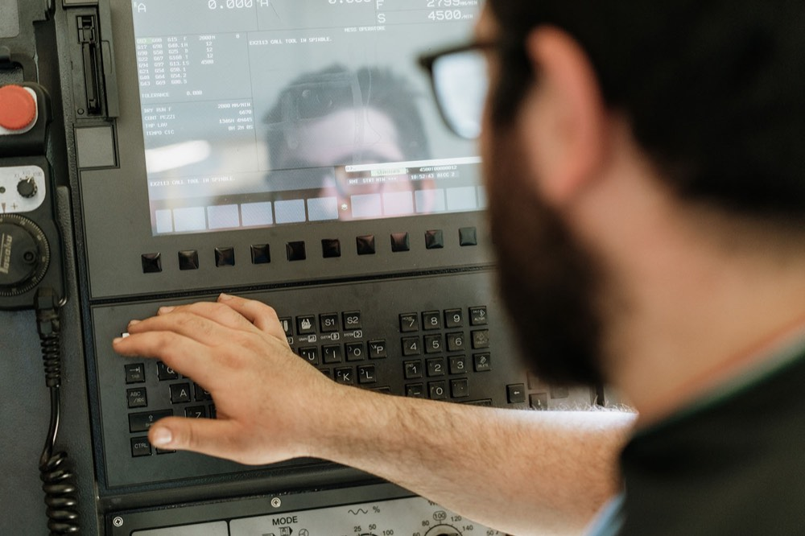
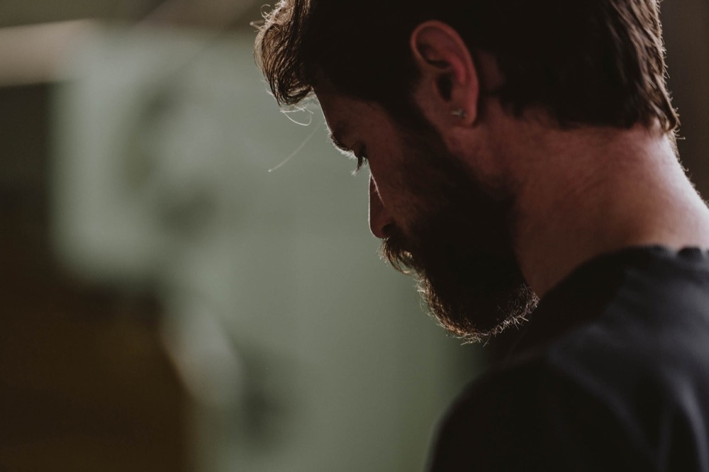
- Artigianatole mani di chi fresa e salda
- TecnologiaCNC, robotica, stampa 3D
- Calcoloogni pezzo nasce da un progetto
- Visioneperché le idee diventino macchine
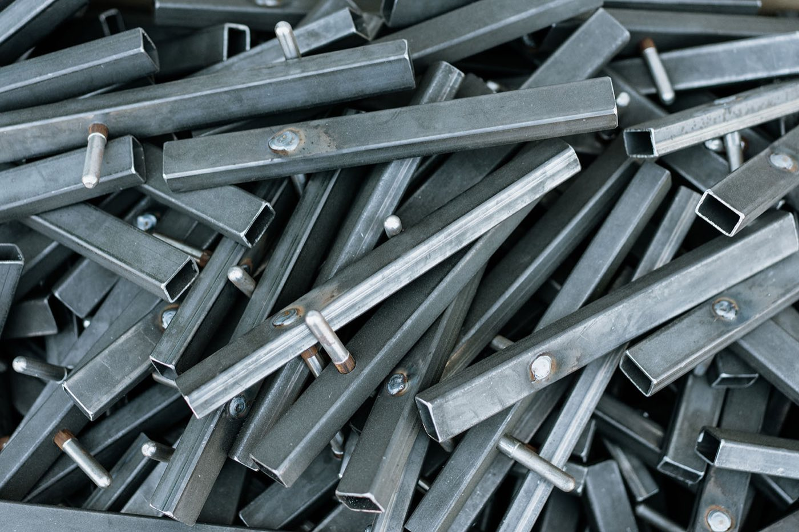
Dal 2007, un passo alla volta.
-
12 ottobre 2007
Tech-Mec apre a Cupello. All'inizio è meccanica generale: lavorazioni semplici.
-
Gli anni della crescita
Impegno, professionalità e attenzione a ogni cliente: crescono le competenze e il volume di lavoro.
-
Oggi
Realizziamo e assembliamo strutture e componenti meccanici complessi, e facciamo manutenzione presso importanti realtà multinazionali.
-
Domani
Continuare a crescere investendo in qualità, innovazione e miglioramento continuo.
Qualità certificata UNI ISO 9001.
Lo standard internazionale per la gestione della qualità: processi efficienti, miglioramento continuo e piena soddisfazione del cliente. Verificati da un ente esterno, non solo promessi.
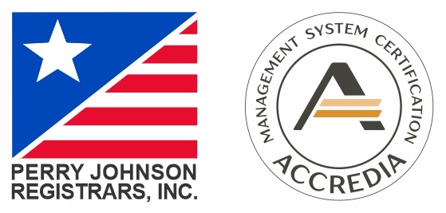
Dentro l'officina di Cupello.
Niente foto di repertorio: queste sono le nostre macchine, i nostri pezzi e la nostra gente.
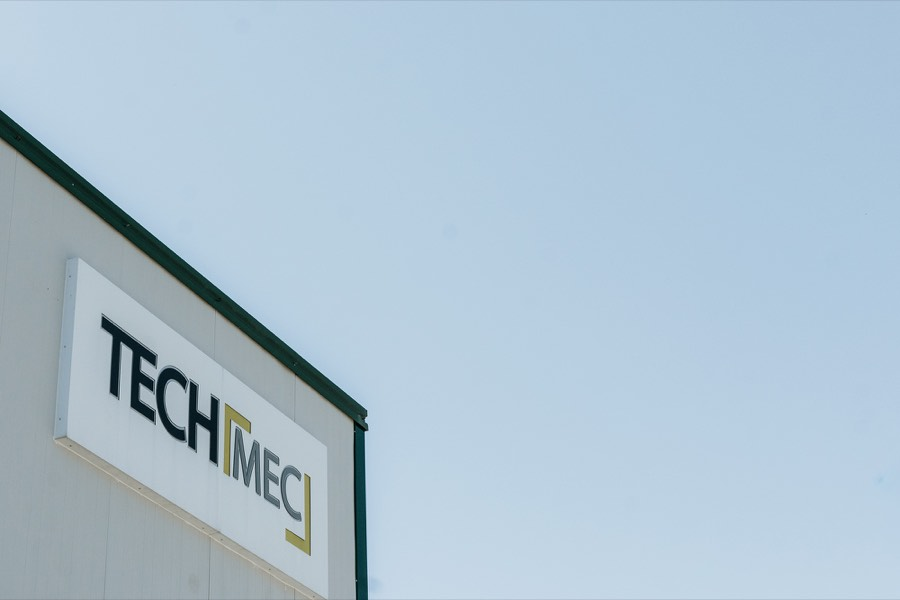
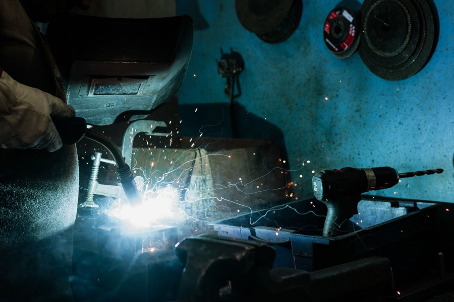
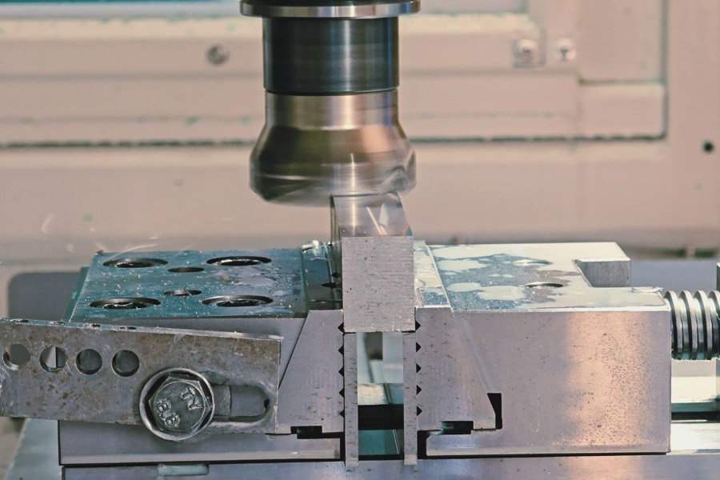
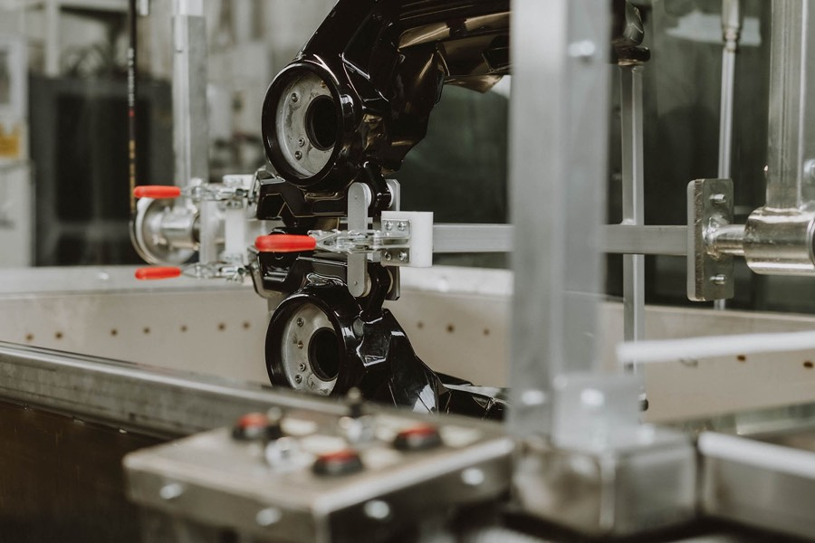
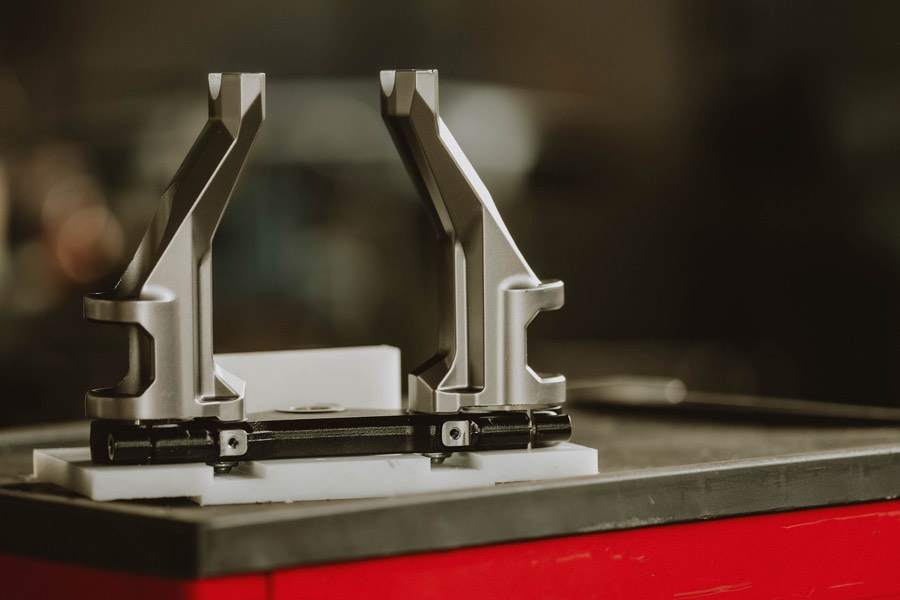
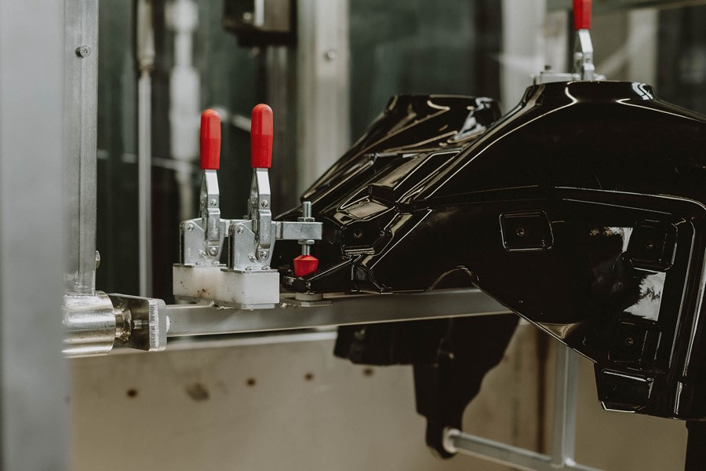
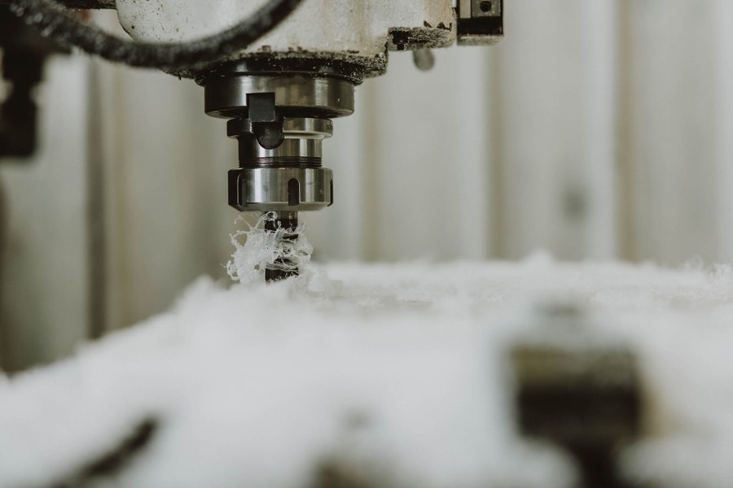
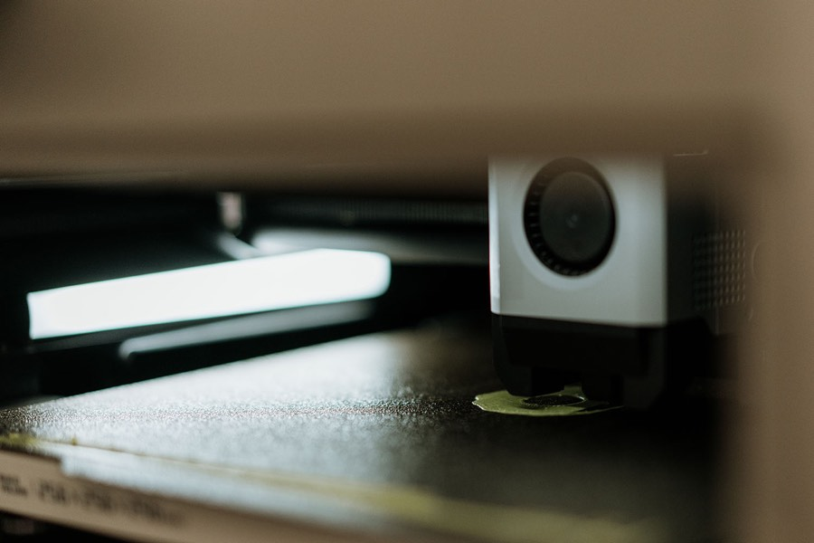
Raccontateci il lavoro. Vi rispondiamo con un preventivo.
Un pezzo, un'attrezzatura, una linea da montare o un impianto fermo: più dettagli ci date, più il preventivo è preciso.
- Telefono 0873 720749
- Email info@tech-mec.com
- PEC tech-mec.srl@legalmail.it
-
Sede operativa
Via dell'Artigianato, 10
66051 Cupello (CH) Indicazioni stradali - Orari [DA CONFERMARE]